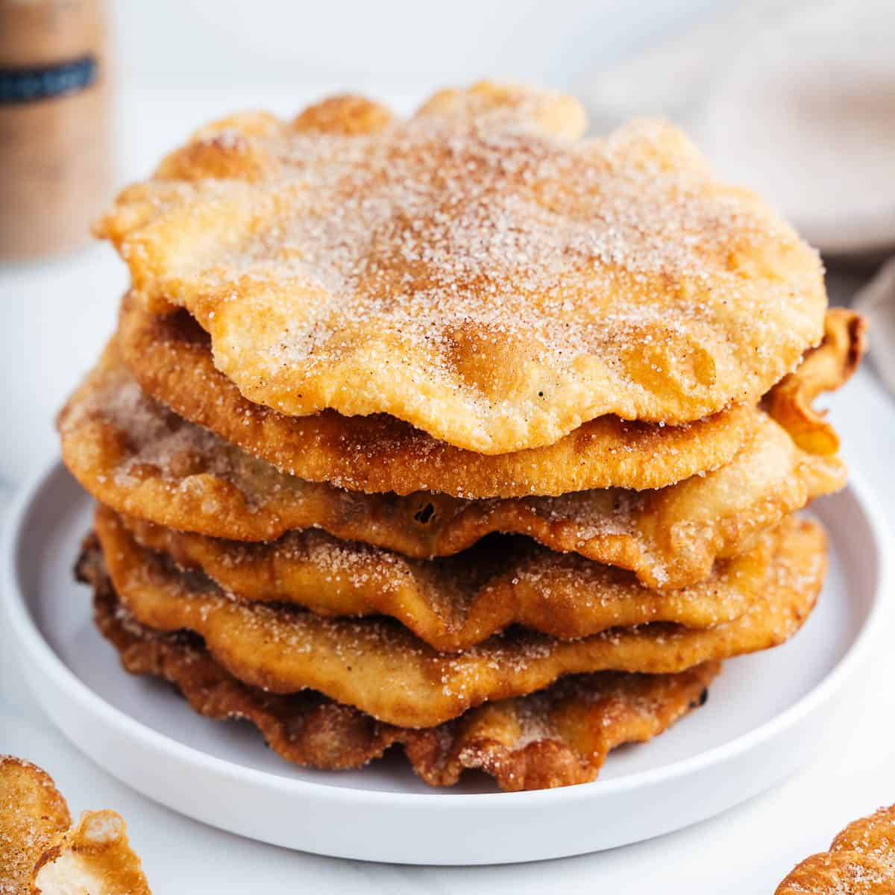

Buñuelos
History
Buñuelos are a standard Christmas dessert more known in Latin America.Most people believe that buñuelos originate in Mexico but its not true buñuelos actualy originate from Spain.The Spaniards who took over Latin America are actually the ones that brought them over.The word buñuelos originate from the spanish word "puño" which means fist. There is a tale regarding buñuelos saying that they were made by a Moorish baker who found a more efficient way to make bread by placing dough in oil since oven fuels were sparse.
Ingredients
- 2 cups of Water
- 2 cups of All-Purpose Flour
- 200 ml of Vegetable Oil
- 4 tbl of White Sugar
- 1 tbl of Cinammon
Directions
- Knead the water and all-purpose flour together. Until the consistency of the dough is able to roll into a ball.
- Roll the dough into 1-2 inch balls. Then let them sit with a cloth over the for 10 minutes this will make them easier manage for the next step.
- After the 10 minutes are up heat up the oil under medium heat. While the oil is heating up take one of the dough balls and spread it out thinly untils its almost see through.
- You place the now spread out dough ball into the oil and leave it in there for about 30 seconds the flip over it should be a golden color.
- Take the now buñuelo out of the oil and place in a conatainer in a way to drain out the oil.
- Then mix the white sugar and cinnammon. This mixture is the topping for the buñuelos.
- Now you can take you buñuelos and sprinkle some of you mixture on top and Enjoy!

Tasting Table.What Makes Mexican Buñuelos Unique? https://www.tastingtable.com/1160797/what-makes-mexican-bunuelos-unique/